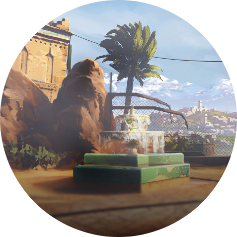

RUINS : Following the incident at the Ruins, there's been a rumor that there is a last descendant of the tribe that worships it. Both sides rush to capture the VIP into their custody.
STAKES : Recent Investigation has discovered that these Ruins is home to an ancient power capable of wiping out the universe. Following this incident, this site has become the battleground between two opposing forces, one is trying to destroy the power while the other tries to protect it.
FACTORY : While the 2 sides are fighting, a 3rd party organisation has emerged and has already weaponised the ancient power. Both sides agreed for a truce and defeat this mysterious organisation.